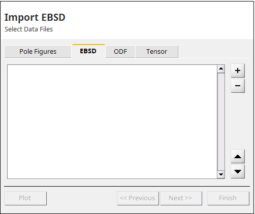
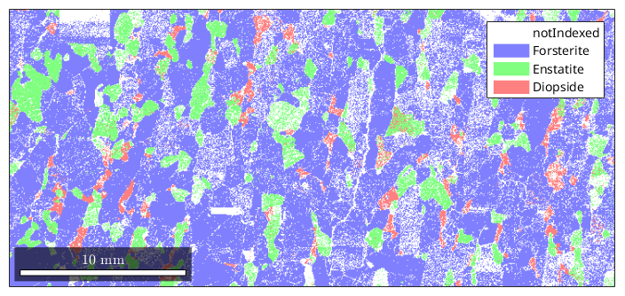

How to import EBSD Data
| On this page ... |
| Importing EBSD data using the import wizard |
| Supported Data Formats |
| The Import Script |
| Writing your own interface |
Importing EBSD data into MTEX is mainly done by creating an instance of the class EBSD from an EBSD data file. Once such an EBSD object has been created, the data can be further manipulated, visualized and analyzed, or further, be generalized by means of grain reconstruction with the help of its class methods.
The simplest way to import EBSD data is to use the import wizard. The import_wizard can be started either by typing into the command line
import_wizard('EBSD'); or by using the start menu item Start/Toolboxes/MTEX/Import Wizard and switch to the EBSD tab. EBSD Data files can be also imported via the file browser by choosing Import Data from the context menu of the selected file if its file extension was registered with mtex_settings.m
The import wizard guides through the correct setup of:
In the end, the imported wizard creates a workspace variable or generates an m-file loading the data automatically. Furthermore appending a template script allows radip data processing.
The import wizard supports the import of the following EBSD data formats:
|
TSL single orientation files. |
|
|
Bruker single orientation files. |
|
|
single orientation files. |
|
|
Oxford single orientation files. |
|
|
HKL single orientation files. |
|
|
Dream 3d single orientation files. |
|
|
single orientation files. |
|
|
single orientation files. |
|
|
single orientation files. |
|
|
single orientation files. |
|
|
ASCII files with Euler angles as columns. |
If the data is recognized as an ASCII list of orientations, phase and spatial coordinates in the form
alpha_1 beta_1 gamma_1 phase_1 x_1 y_1 alpha_2 beta_2 gamma_2 phase_2 x_2 y_2 alpha_3 beta_3 gamma_3 phase_3 x_3 y_3 . . . . . . . . . . . . . . . . . . alpha_M beta_M gamma_M phase_m x_m y_m
an additional tool supports to associated the columns with the corresponding properties.
EBSD data can be also imported by the command EBSD.load. The EBSD.load function automatically detects the data format and imports the data, but it might be necessary to specify the crystal symmetries of all occurring phases and additional information about the format.
A script generated by the import wizard has the following form:
% crystal symmetry CS = {... 'notIndexed',... crystalSymmetry('mmm', [4.756 10.207 5.98], 'mineral', 'Forsterite', 'color', 'light blue'),... crystalSymmetry('mmm', [18.2406 8.8302 5.1852], 'mineral', 'Enstatite', 'color', 'light green'),... crystalSymmetry('2/m', [9.746 8.99 5.251], [90,105.63,90]*degree, 'X||a*', 'Y||b*', 'Z||c', 'mineral', 'Diopside', 'color', 'light red')}; % plotting convention setMTEXpref('xAxisDirection','east'); setMTEXpref('zAxisDirection','outOfPlane'); % file name fname = fullfile(mtexDataPath,'EBSD','Forsterite.ctf'); % create an EBSD variable containing the data ebsd = EBSD.load(fname,CS,'interface','ctf',... 'convertEuler2SpatialReferenceFrame');
Running this script imports the data into a variable named ebsd. From this point, the script can be extended to your needs, e.g:
plot(ebsd)
In case that the EBSD format is not supported, you can write an interface by your own to import the data. Once you have written such an interface that reads data from certain data files and generates an EBSD object you can integrate this method into MTEX by copying it into the folder MTEX/qta/interfaces and rename your function loadEBSD_xxx. Then it will be automatical recognized by the import wizard. Examples how to write such an interface can be found in the directory MTEX/qta/interfaces.
| DocHelp 0.1 beta |